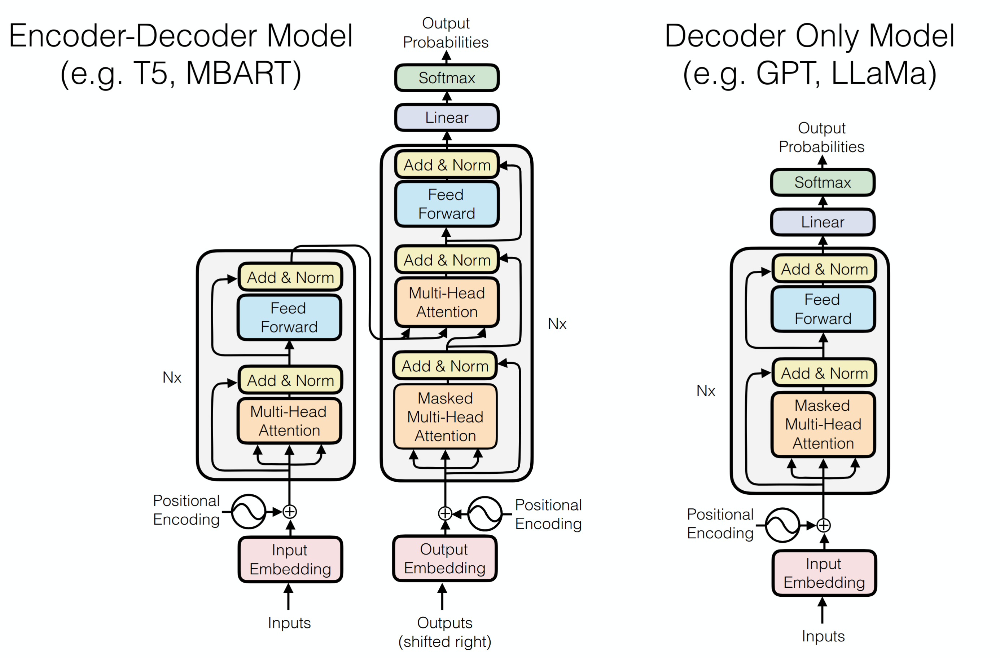
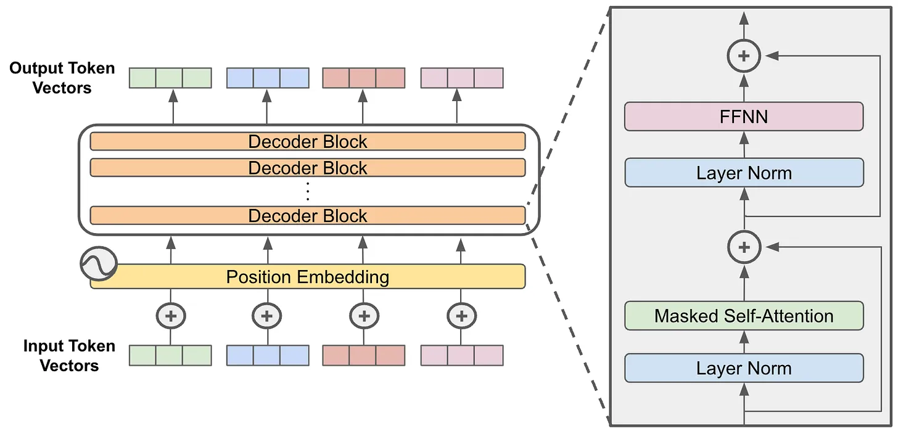
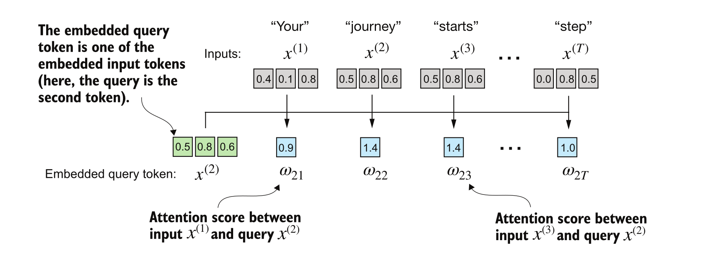

Topics Covered
- Transformer architecture
- Self-attention mechanism
- Causal Attention
- Multi-head attention
Models of the Week
- SOTA Open Source model
- 1T+ parameters, 30T tokens pretraining data, Vocabulary Size - 160K, Context Length - 256K
- Agentic, Agent Swarm, Multi-modal capabilities
- 7B, Real-time, speech to speech model, full-duplex model
- Demo
Qwen/Qwen3-TTS-12Hz-1.7B-CustomVoice
- Text to Speech model with voice design, voice cloning, custom voice
Recap : Tokenization
- Words, Subwords, Characters level tokenization
- Subword tokenization is the most commonly used approach in LLMs

Text to Token IDs
import tiktoken
tokenizer = tiktoken.get_encoding("gpt2")
text = "This is an example."
token_ids = tokenizer.encode(text)
# tokens = ['This', ' is', ' an', ' example', '.']
# token_ids = [40234, 2052, 133, 389, 12]

Tokens to Embeddings
- Each token ID maps to a unique vector in the embedding matrix
- Embedding Matrix : [vocab_size x embedding_dim]
- Example : GPT-2 Small
- vocab_size = 50257
- embedding_dim = 768
Transformers
- All LLMs rely on the Transformer architecture, introduced in the 2017 paper "Attention Is All You Need" (https://arxiv.org/abs/1706.03762).
- No Recurrent or Convolution layers, entirely based on Attention Mechanism
Two types of Transformer Architectures
- Encoder-Decoder : Sequence to sequence tasks (translation, summarization)
- Decoder-Only : Language modeling tasks (text generation, completion)
- Most LLMs (GPT, Llama, etc.) use the Decoder-Only architecture
Key Components of Transformer

- Positional Encoding
- Multi-Head Attention
- Residual Connections
- Feed Forward Networks
- Layer Normalization
Language Modeling
- Given a sequence of tokens, predict the next token
- Example: A robot may not harm a ___ -> human
- [PROMPT] -> [MODEL] -> [PREDICTION]

Decoder-only Language Model
- A decoder-only language model is a stack of transformer decoder blocks

Decoder-only LLM : Input Side
- Input tokens are passed through multiple decoder blocks
- Embed : Text -> Token IDs -> Embeddings -> Decoder Blocks

Decoder-only LLM : Output Side
- UnEmbed : The final vector is projected to vocabulary size and softmaxed to get token probabilities

Decoder Block Internals
- Masked Multi-Head Self-Attention
- Feed Forward Network (FFN)
- Residual Connections
- Layer Normalization

Sequence Modeling Challenges
- Understanding context and relationships between words
- Need to keep grammatical structures aligned

Recurrent Neural Networks (RNNs) for Sequence Modeling
- Process all input into a hidden state,
- Pass hidden state to decoder
- Decoder uses hidden state to generate output sequence

RNNs + Attention
- Let Decoder access all Encoder hidden states
- Attend to relevant parts of input sequence when generating each output token [Bahdanau et al., 2015]
RNNs + Attention
Limitations
- Sequential processing limits parallelization
- Difficulty capturing long-range dependencies
Solution:
- Remove recurrence, process all input tokens simultaneously
- Allow each token in the input to focus on relevant parts of the input
Parallel Processing
- Encoder : Process all input tokens simultaneously
- Decoder : Generate output tokens one by one, attending to encoder states and previous tokens

Self-Attention Mechanism
- Compute attention within the same sequence of tokens. Self = Same Sequence
- Get improved representation by mixing in information from other tokens that seem relevant.


Self-Attention : Intuition
"Self-attention is like a group conversation where everyone can hear everyone else simultaneously, rather than passing notes one by one (RNNs)"
Self-Attention : Intuition

Each token : "Who should I pay attention to?"
For every token, the model:
- treats that token as the "current focus"
- assigns higher weight to tokens that help interpret it
- creates an updated vector for the token:
Self-Attention vs Encoder–Decoder Attention
Encoder–Decoder: One sequence attends to a different sequence (e.g., translation: output attends to the input sentence).
Self-attention: Sequence attends to itself (tokens attending to other tokens in the same sentence).

Simple Attention Mechanism

Input - Sequence of vectors (X) (source)
Output - Sequence of vectors (Z) (context)
$ Z = [z_1, z_2, \dots, z_n], \quad z_i \in \mathbb{R}^d $
$ z_i = \sum_{j=1}^{n} \text{attention_weight}_{ij} . x_j $
Computing attention weights for a single token
Your journey starts with one step
query = "journey"
Step 1:
- Compute attention scores by dot product of "journey" with all tokens
query = inputs[1]
attn_scores_2 = torch.empty(inputs.shape[0])
for i, x_i in enumerate(inputs):
attn_scores_2[i] = torch.dot(x_i, query)
print(attn_scores_2)
Computing attention weights for a single token

Step 2:
- Apply normalization to get attention weights (additive normalization)
- Normalization using softmax is more common in practice, as it ensures all weights are positive and sum to 1.
attn_weights_2_tmp = attn_scores_2 / attn_scores_2.sum()
def softmax_naive(x):
return torch.exp(x) / torch.exp(x).sum(dim=0)
attn_weights_2_naive = softmax_naive(attn_scores_2)
attn_weights_2 = torch.softmax(attn_scores_2, dim=0)
Step 3:
- Compute output vector as weighted sum of value vectors

context_vec_2 = torch.zeros(inputs.shape[1])
for i, x_i in enumerate(inputs):
context_vec_2 += attn_weights_2[i] * x_i
Computing attention weigths for all tokens
- Compute attention scores for all tokens
attn_scores = torch.zeros(inputs.shape[0], inputs.shape[0])
for i, x_i in enumerate(inputs):
for j, x_j in enumerate(inputs):
attn_scores[i, j] = torch.dot(x_i, x_j)
- Normalize scores to get attention weights
attn_weights = torch.softmax(attn_scores, dim=-1)
- Compute output/context vectors for all tokens
output_vectors = torch.zeros_like(inputs)
for i in range(inputs.shape[0]):
for j in range(inputs.shape[0]):
output_vectors[i] += attn_weights[i, j] * inputs[j]
Computing attention weigths for all tokens
- Better implementation using matrix multiplication
attn_scores = torch.zeros(inputs.shape[0], inputs.shape[0])
attn_scores = inputs @ inputs.T
attn_weights = torch.softmax(attn_scores, dim=-1)
output_vectors = attn_weights @ inputs
Summary of Self-Attention Mechanism
- Input: sequence of vectors (X) (source)
- Output: sequence of vectors (Z) (context)
- Compute attention scores against all input vectors
- Normalize scores to get attention weights
- Compute output vectors as weighted sum of input vectors
def self_attention(inputs):
# Step 1: Compute attention scores
attn_scores = inputs @ inputs.T
# Step 2: Normalize scores to get attention weights
attn_weights = torch.softmax(attn_scores, dim=-1)
# Step 3: Compute output vectors as weighted sum of input vectors
output_vectors = attn_weights @ inputs
return output_vectors
How to improve this basic self-attention mechanism?
Learn the weights used to compute attention scores!
References
- Vaswani et al., Attention Is All You Need (2017) - The original transformer paper
- Bahdanau et al., Neural Machine Translation by Jointly Learning to Align and Translate (2014) - Introduced attention for seq2seq
- Jay Alammar, The Illustrated Transformer
- Jay Alammar, The Illustrated GPT-2
- The Annotated Transformer - Harvard NLP
- Sebastian Raschka, Build a Large Language Model from Scratch - Chapters 3-4
Thank You
Questions?